![]()
library(dplyr)
library(tibble)
library(ggplot2)
library(ggforce)
library(deldir)
library(ggthemes)
library(voronoise)
library(tictoc)
library(ambient)
library(purrr)
library(tidyr)
library(stringr)
library(truchet)
library(sf)A couple of years ago I gave an invited workshop called art from code at the 2022 rstudio::conf (now posit::conf) conference. As part of the workshop I wrote a lengthy series of notes on how to make generative art using R, all of which were released under a CC-BY licence. For a while now I’d been thinking I should do something with these notes. I considered writing a book, but in all honesty I don’t have the spare capacity for a side-project of that scale these days. I can barely keep up with the workload at my day job as it is. So instead, I’ve decided that I’d port them over to this site as a series of blog posts. In doing so I’ve made a deliberate decision not to modify the original content too much (nobody loves it when an artist tries to “improve” the original, after all). All I’ve done is update the code to accommodate package changes since 2022, and some minor edits so that the images are legible when embedded in this blog (which is light-themed, and the original was dark-theme). Other than that, I’ve left it alone. This is the sixth post in that series.
- Prelude
- Spatial tricks with ambient
- Polygon tricks
- Shading tricks
- Iterated function systems
- Tiles and tessellations
- Pixel filters
sample_canva2 <- function(seed = NULL, n = 4) {
if(!is.null(seed)) set.seed(seed)
sample(ggthemes::canva_palettes, 1)[[1]] |>
(\(x) colorRampPalette(x)(n))()
}Rectangle subdivision
One of my favourite generative artists in the R community is Ijeamaka Anyene, partly because she’s fabulous but also partly because her approach is so different to mine and she makes things I’d never think to try. She has a talent for designing colourful pieces in a minimalist, geometric style. Minimalism in art is not something I’m good at: I have a habit of overcomplicating my pieces! However, in this first section I’m going to resist the temptation to add complexity, and build a system inspired by Ijeamaka’s recursive rectangle subdivision art. She has a blog post on her approach, by the way.
Recursive rectangle subdivisions come up a lot in real life. Suppose you have a parcel of land and want to divide it in two parts A and B. In doing so you create a boundary. Later, land unit A wants to divide: this adds a new boundary, splitting A into A1 and A2, but leaving unit B untouched. If this process repeats often enough, you end up with subdivisions that have a very recognisable structure. Here’s a subdivision depicting a 1939 land use survey map for a part of the San Fernando valley in Los Angeles
Let’s design a generative art system that mimics this process. Suppose we have some data frame blocks where each row represents one rectangular block, and one of the columns it stores is the area of that rectangle. Now imagine that our subdivision process deliberately targets larger blocks: the probability of choosing the a block for subdivision is proportional to its area. The choose_rectangle() function below takes the blocks data frame as input, and randomly selects a row with probability proportional to blocks$area. It returns the row number for the selected rectangle:
choose_rectangle <- function(blocks) {
sample(nrow(blocks), 1, prob = blocks$area)
}For this system we assume that you can only subdivide a rectangle in one of two ways: horizontally, or vertically. We aren’t going to allow diagonal lines or anything that would produce other kinds of polygons. The input to a subdivision is a rectangle, and the output should be two rectangles.
If we’re going to do that, we need to select a “break point”. The choose_break() function will do that for us. It takes a lower and upper value as input, and returns a value (expressed as the distance from the lower boundary) specifying where the break is inserted:
choose_break <- function(lower, upper) {
round((upper - lower) * runif(1))
}Notice that I’ve called round() here to ensure that the outputs will always be integer value. As a consequence, all of our subdivisions will line up on a grid of some kind: that comes in handy later if, for example, we want to plot the result as a bitmap or a raster object.
Next, we need a function that can subdivide a rectangle! For the moment, let’s assume that we’re splitting horizontally, so in a moment we’ll write a function called split_rectangle_x() to do this for us. It’s going to take a rectangle as the main argument, which is presumably going to be a tibble that contains columns that define a rectangle. To make life a little simpler, here’s a convenience function create_rectangles() that creates this tibble for us:
create_rectangles <- function(left, right, bottom, top, value) {
tibble(
left = left,
right = right,
bottom = bottom,
top = top,
width = right - left,
height = top - bottom,
area = width * height,
value = value
)
}Note that this function can create multiple rectangles. It doesn’t check to see if the rectangles overlap, though. If I wanted to write rigorous code I would probably prevent it from allowing rectangles to overlap, but I’m not being super rigorous here. It’s not production code!
Anyway, here are a couple of rectangles that represent a vertical split, where one of them sits above the other:
rect <- create_rectangles(
left = 1,
right = 10,
bottom = c(1, 4),
top = c(4, 10),
value = 1:2
)
rect# A tibble: 2 × 8
left right bottom top width height area value
<dbl> <dbl> <dbl> <dbl> <dbl> <dbl> <dbl> <int>
1 1 10 1 4 9 3 27 1
2 1 10 4 10 9 6 54 2Now we can write our horizontal subdivision function, split_rectangle_x(), and it’s vertical counterpart split_rectangle_y(). Each of these takes a single rectangle as input, calls choose_break() to determine where the break point should be, and then creates two new rectangles that will replace the old one. When called, they’ll automatically recalculate the width, height, and areas for both rectangles. The value of the first rectangle (the one to the left or on the lower side) remains unchanged, and and the new_value argument is used to assign a value to the second rectangle:
split_rectangle_x <- function(rectangle, new_value) {
with(rectangle, {
split <- choose_break(left, right)
new_left <- c(left, left + split)
new_right <- c(left + split, right)
new_value <- c(value, new_value)
create_rectangles(new_left, new_right, bottom, top, new_value)
})
}split_rectangle_y <- function(rectangle, new_value) {
with(rectangle, {
split <- choose_break(bottom, top)
new_bottom <- c(bottom, bottom + split)
new_top <- c(bottom + split, top)
new_value <- c(value, new_value)
create_rectangles(left, right, new_bottom, new_top, new_value)
})
}While we are here, we can write a split_rectangle() function that randomly decides whether to split horizontally or vertically, and then calls the relevant function to do the splitting:
split_rectangle <- function(rectangle, value) {
if(runif(1) < .5) {
return(split_rectangle_x(rectangle, value))
}
split_rectangle_y(rectangle, value)
}Here it is in action:
set.seed(1)
split_rectangle(rectangle = rect[1, ], value = 3)# A tibble: 2 × 8
left right bottom top width height area value
<dbl> <dbl> <dbl> <dbl> <dbl> <dbl> <dbl> <dbl>
1 1 4 1 4 3 3 9 1
2 4 10 1 4 6 3 18 3Notice that it is possible to create a block with zero area. That’s okay: that block will never be selected for later subdivision. We could filter out all zero-area rectangles if we wanted to, but I’m too lazy to bother!
Now we are in a position to define a function called split_block() that takes block, a tibble of one or more rectangles as input, selects one to be subdivided using choose_rectangle(), and then splits it with split_rectangle(). The old, now-subdivided rectangle is removed from the block, the two new ones are added, and the updated block of rectangles is returned:
split_block <- function(blocks, value) {
old <- choose_rectangle(blocks)
new <- split_rectangle(blocks[old, ], value)
bind_rows(blocks[-old, ], new)
}Here it is at work:
split_block(rect, value = 3)# A tibble: 3 × 8
left right bottom top width height area value
<dbl> <dbl> <dbl> <dbl> <dbl> <dbl> <dbl> <dbl>
1 1 10 1 4 9 3 27 1
2 1 10 4 5 9 1 9 2
3 1 10 5 10 9 5 45 3Now that we have a create_rectangles() function that can generate a new rectangle and a split_block() function that can pick one rectangle and split it, we can write subdivision() function quite succinctly. We repeatedly apply the split_block() function until it has created enough splits for us. I could write this as a loop, but it feels more elegant to me to use the reduce() function from the purrr package to do this:
subdivision <- function(ncol = 1000,
nrow = 1000,
nsplits = 50,
seed = NULL) {
if(!is.null(seed)) set.seed(seed)
blocks <- create_rectangles(
left = 1,
right = ncol,
bottom = 1,
top = nrow,
value = 0
)
reduce(1:nsplits, split_block, .init = blocks)
}
subdivision(nsplits = 5)# A tibble: 6 × 8
left right bottom top width height area value
<dbl> <dbl> <dbl> <dbl> <dbl> <dbl> <dbl> <dbl>
1 1 1000 661 1000 999 339 338661 1
2 1 207 1 661 206 660 135960 0
3 207 1000 255 661 793 406 321958 3
4 207 776 1 255 569 254 144526 2
5 776 950 1 255 174 254 44196 4
6 950 1000 1 255 50 254 12700 5As you can see, in this version of the system I’ve arranged it so that the value column represents the iteration number upon which the corresponding rectangle was created.
Finally we get to the part where we make art! The develop() function below uses geom_rect() to draw the rectangles, mapping the value to the fill aesthetic:
develop <- function(div, seed = NULL) {
div |>
ggplot(aes(
xmin = left,
xmax = right,
ymin = bottom,
ymax = top,
fill = value
)) +
geom_rect(
colour = "#ffffff",
linewidth = 3,
show.legend = FALSE
) +
scale_fill_gradientn(
colours = sample_canva2(seed)
) +
coord_equal() +
theme_void() +
theme(
plot.background = element_rect(
fill = "#ffffff"
)
)
}
subdivision(seed = 1) |> develop() 
The uneven spacing here is not accidental. Because the rectangles are plotted with a thick white border, and plotted against a white background, very thin rectangles are invisible. That leads to a slightly irregular pattern among the visible rectangles. I quite like it!
Here are a few more outputs from the system:
subdivision(nsplits = 100, seed = 123) |> develop()
subdivision(nsplits = 200, seed = 102) |> develop()
subdivision(nsplits = 500, seed = 103) |> develop()
Mosaica
Remember earlier when I said I have this compulsive tendency to make my generative art systems unnecessarily elaborate? I was not lying. Now that I’ve created this simple and clean subdivision() system my first instinct is to use it as the basis for something more complicated. The fill_rectangle() function below takes a single rectangle as input, divides it into a grid of squares with edge length 1, and then assigns each of those squares a fill value generated with a randomly sampled fractal (using the ambient package to do the work):
fill_rectangle <- function(left, right, bottom, top, width,
height, area, value, nshades = 100) {
set.seed(value)
fractals <- list(billow, fbm, ridged)
generators <- list(gen_simplex, gen_perlin, gen_worley)
expand_grid(
x = left:right,
y = bottom:top,
) |>
mutate(
fill = 10 * value + fracture(
x = x * sample(-3:3, 1),
y = y * sample(-3:3, 1),
noise = sample(generators, 1)[[1]],
fractal = sample(fractals, 1)[[1]],
octaves = sample(10, 1),
frequency = sample(10, 1) / 20,
value = "distance2"
) |>
normalise(to = c(1, nshades)) |>
round()
)
}I’ll also write a draw_mosaic() function that plots a collection of these unit-square sized tiles:
draw_mosaic <- function(dat, palette) {
background <- sample(palette, 1)
dat |>
ggplot(aes(x, y, fill = fill)) +
geom_tile(show.legend = FALSE, colour = background, size = .2) +
scale_size_identity() +
scale_colour_gradientn(colours = palette) +
scale_fill_gradientn(colours = palette) +
scale_x_continuous(expand = expansion(add = 5)) +
scale_y_continuous(expand = expansion(add = 5)) +
coord_equal() +
theme_void() +
theme(plot.background = element_rect(fill = background))
}When combined with the original subdivision() function I can now write a generative art system called mosaica() that uses subdivision() to partition a grid into rectangular units, then applies fill_rectangle() to separate each of these rectangles into unit squares and fill each of these squares with a colour based on a spatial noise pattern generated using ambient. Then it draws a picture:
mosaica <- function(ncol = 60,
nrow = 60,
nsplits = 30,
seed = NULL) {
subdivision(ncol, nrow, nsplits, seed) |>
pmap_dfr(fill_rectangle) |>
slice_sample(prop = .995) |>
filter(!is.na(fill)) |>
draw_mosaic(palette = sample_canva2(seed))
}
mosaica(ncol = 200, nrow = 100, nsplits = 200, seed = 1302)
It makes me happy :)
mosaica(seed = 1977)
mosaica(seed = 2022)
mosaica(seed = 1969)mosaica(nrow = 100, seed = 1)
mosaica(nrow = 100, seed = 2)
mosaica(nrow = 100, seed = 3)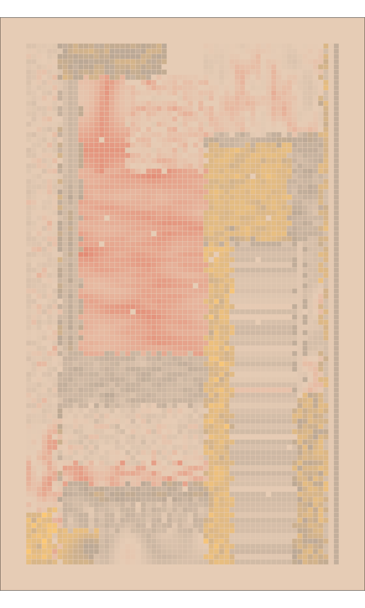
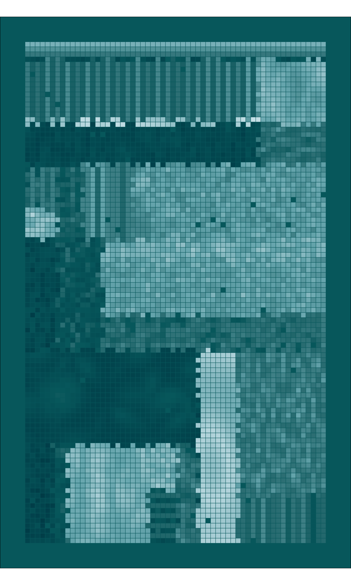
Voronoi tesselation
Let’s switch gears a little. So far we’ve only looked at rectangular tilings, but there are many other ways to tile a two dimensional plane. One method for constructing an irregular tiling – one that generative artists are especially fond of – is to generate a collection of points and then computing the Voronoi tesselation (also known as a Voronoi diagram) of those points. Wikipedia definitions are, once again, helpful:
A Voronoi diagram is a partition of a plane into regions close to each of a given set of objects. In the simplest case, these objects are just finitely many points in the plane (called seeds, sites, or generators). For each seed there is a corresponding region, called a Voronoi cell, consisting of all points of the plane closer to that seed than to any other.
Extremely conveniently for our purposes, the ggforce package provides two handy geom functions – geom_voronoi_segment() and geom_voronoi_tile() – that plot the Voronoi tesselation for a set of points. All you have to do as the user is specify the x and y aesthetics (corresponding to the coordinate values of the points), and ggplot2 will do all the work for you. Let’s see what we can do using these tools!
In the beginning there were points…
set.seed(61)
dat <- tibble(
x = runif(20),
y = runif(20),
val = runif(20)
)
pic <- ggplot(dat, aes(x, y, fill = val)) +
coord_equal(xlim = c(-.3, 1.3), ylim = c(-.3, 1.3)) +
guides(fill = guide_none()) +
theme_void()
pic + geom_point(size = 3)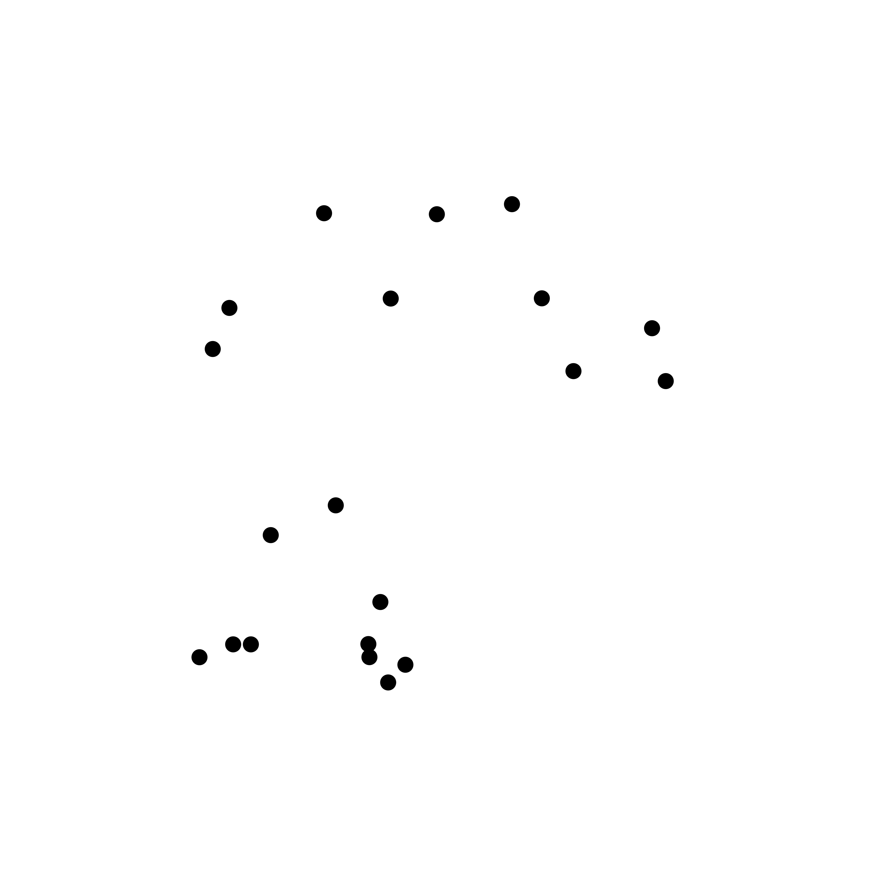
The points themselves are not very artistically impressive, but we can make something more interesting if we add the Voronoi tesselation. The minimal way to do this is with geom_voronoi_segment()
pic +
geom_voronoi_segment() +
geom_point(size = 3)We can already see the beginnings of something pleasing. I mean, if I’m being honest this is already quite pretty in a minimalist way but – as I keep saying – I have an urge to tinker and see what elaborations we can add. First, let’s switch from geom_voronoi_segment() to geom_voronoi_tile():
pic +
geom_voronoi_tile() +
geom_point(size = 3)Setting the max.radius argument prevents any tile extending beyond a fixed distance from the point generating the tile, giving the image as a whole a “bubbly” look:
pic +
geom_voronoi_tile(max.radius = .2) +
geom_point(size = 3)Hm. Those sharp corners between tiles aren’t the prettiest thing I’ve ever seen. Let’s round those corners a little bit, shall we? The radius argument lets us do that:
pic +
geom_voronoi_tile(max.radius = .2, radius = .02) +
geom_point(size = 3)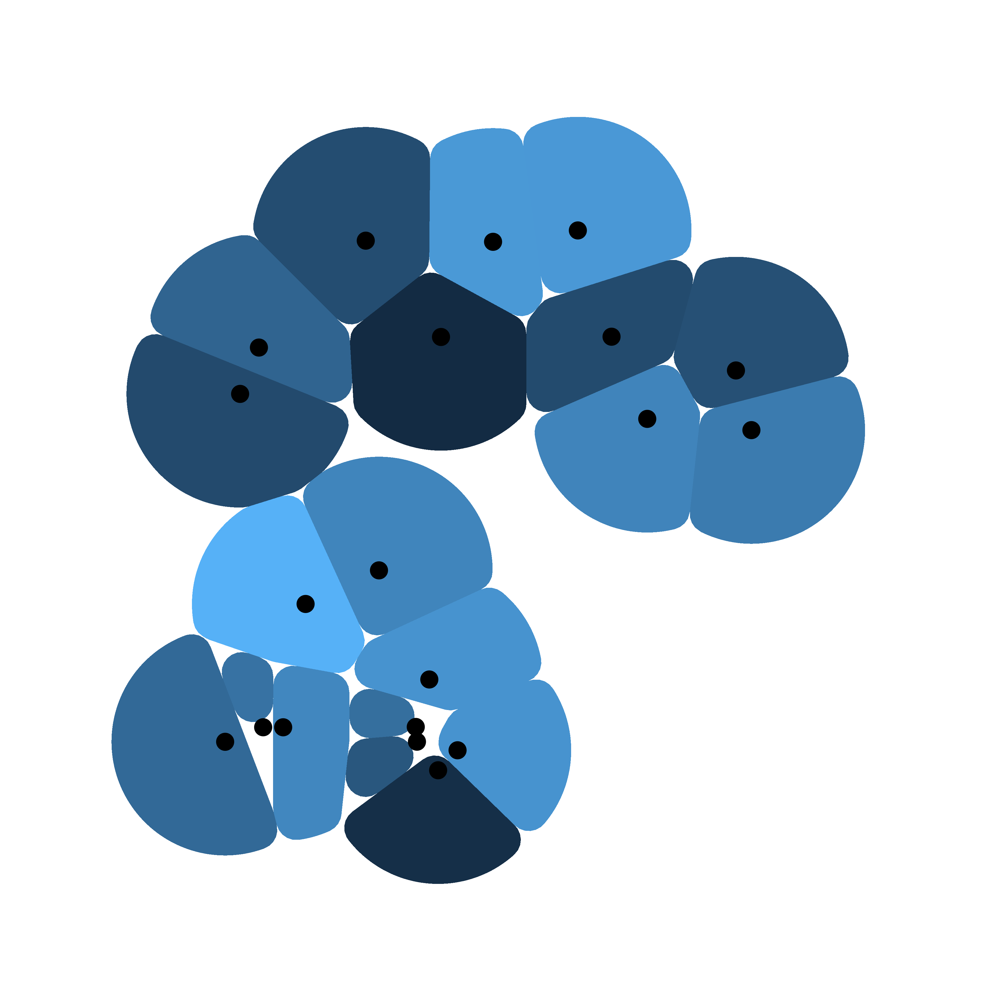
Next, let’s shrink all the tiles a tiny bit to create small gaps between adjacent tiles:
pic +
geom_voronoi_tile(
max.radius = .2,
radius = .02,
expand = -.005
) +
geom_point(size = 3)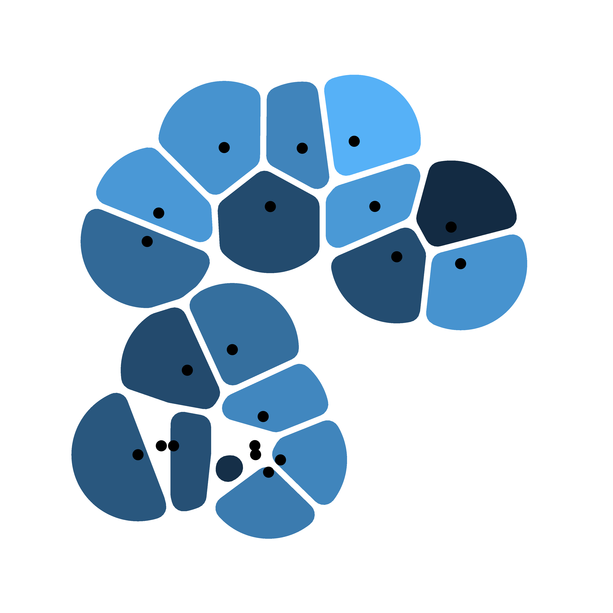
Let’s remove the points themselves, leaving only the rounded tiles:
pic +
geom_voronoi_tile(
max.radius = .2,
radius = .02,
expand = -.005
)Finally, we’ll create another tiling and use it as a background texture:
bg_dat <- tibble(
x = runif(500, min = -.5, max = 1.5),
y = runif(500, min = -.5, max = 1.5)
)
pic +
geom_voronoi_tile(
data = bg_dat,
fill = "#333333",
radius = .01,
expand = -.0025
) +
geom_voronoi_tile(
colour = "white",
max.radius = .2,
radius = .02,
expand = -.005
)Voronoi baroque: Part I
When I first started playing around with Voronoi tesselations the pieces I made looked a lot like the worked example: the Voronoise series I posted on my art site contains pieces that look like the one above, generated from random collections of points. What I started realising a little later is that if you feed a structured set of points into your Voronoi tesselations, you can create some very elaborate patterns. I’ve played around with this idea in a few series (my favourite so far is Sadists Kiss).
I’ll illustrate the approach by reusing an earlier system. The unboxy() function shown below reimplements the “unboxing” system that I talked about in the section on iterated function systems:
unboxy <- function(iterations, layers) {
coeffs <- array(
data = runif(9 * layers, min = -1, max = 1),
dim = c(3, 3, layers)
)
point0 <- matrix(
data = runif(3, min = -1, max = 1),
nrow = 1,
ncol = 3
)
funs <- list(
function(point) point + (sum(point ^ 2)) ^ (1/3),
function(point) sin(point),
function(point) 2 * sin(point)
)
update <- function(point, t) {
l <- sample(layers, 1)
f <- sample(funs, 1)[[1]]
z <- point[3]
point[3] <- 1
point <- f(point %*% coeffs[,,l])
point[3] <- (point[3] + z)/2
return(point)
}
points <- accumulate(1:iterations, update, .init = point0)
points <- matrix(unlist(points), ncol = 3, byrow = TRUE)
points <- as_tibble(as.data.frame(points))
names(points) <- c("x", "y", "val")
return(points)
}I’m not going to explain the inner workings of this function here (because they’re already discussed elsewhere), but in case you need a refresher or haven’t read the relevant page, here’s a look at the kinds of data this function produces, and a scatterplot showing the very non-random spatial patterns it generates:
set.seed(1)
dat <- unboxy(iterations = 1000, layers = 5)
dat
ggplot(dat, aes(x, y)) +
geom_point(colour = "white", show.legend = FALSE) +
coord_equal(xlim = c(-2.5, 2.5), ylim = c(-2.5, 2.5)) +
theme_void()# A tibble: 1,001 × 3
x y val
<dbl> <dbl> <dbl>
1 0.579 0.236 0.666
2 -1.95 0.935 -0.0757
3 -0.884 1.09 0.672
4 -0.929 2.04 0.401
5 0.861 1.44 2.01
6 0.404 1.29 1.46
7 0.826 0.834 -0.909
8 0.999 -2.00 1.94
9 0.850 0.0301 1.61
10 -1.80 1.38 -0.381
# ℹ 991 more rows
Now let’s plot the Voronoi tesselation corresponding to these points, once again relying on our old friend sample_canva2() to generate the palette:
pic <- ggplot(dat, aes(x, y, fill = val)) +
theme_void() +
coord_equal(xlim = c(-2.5, 2.5), ylim = c(-2.5, 2.5)) +
scale_fill_gradientn(colours = sample_canva2()) +
scale_x_continuous(expand = c(0, 0)) +
scale_y_continuous(expand = c(0, 0))
pic +
geom_voronoi_tile(
colour = "#222222",
size = .2,
show.legend = FALSE
)Rounding the corners and expanding the tiles gives the piece a different feel…
pic +
geom_voronoi_tile(
radius = .01,
expand = .01,
colour = "#222222",
size = .2,
show.legend = FALSE
)So does this…
pic +
geom_voronoi_tile(
max.radius = .1,
radius = .01,
expand = -.0001,
colour = "#222222",
size = .2,
show.legend = FALSE
)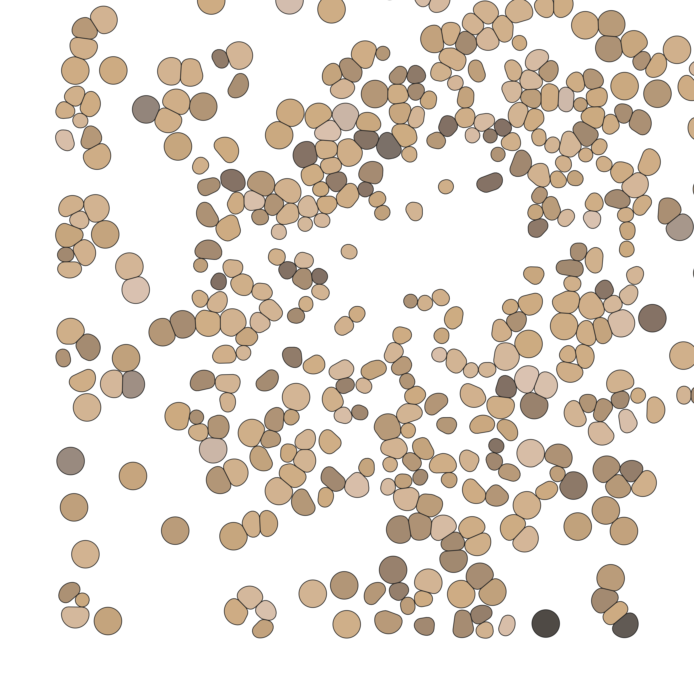
The possibilities are surprisingly rich, and quite a lot of fun to play around with!
Voronoi baroque: Part II
Okay, I need to confess something. Voronoi tiling art was the thing that finally pushed me to learn the ggproto object oriented programming system used by ggplot2. It’s not because I’m a masochist and enjoy the pain of learning an OOP system that isn’t used for anything except ggplot2. No-one is that much of a masochist, surely. No, it was because I wanted the ability to intercept and modify the Voronoi tiles during the plot construction process. Because… yeah, I don’t even remember why I wanted that. Evil reasons, probably.
Enter stage left, the voronoise package. It’s not on CRAN – because I can’t think of a single good reason to send it to CRAN – but you can install it from GitHub with
remotes::install_github("djnavarro/voronoise")The voronoise package only does one thing: it supplies geom_voronoise(), a geom that behaves just like geom_voronoi_tile() except for the fact you can pass it a “perturbing function” that modifies the tiles. Annoyingly – because I was not a very good software developer at the time and I was not thinking about what someone else (i.e., future me) would use it for later – the default arguments to geom_voronoise() aren’t the same as the defaults for geom_voronoi_tile(), which means it’s a good idea to explicitly specify things like max.radius etc even if you’re “just going to use the defaults”. Sorry. That was my mistake. I cannot stress enough that voronoise is not a good package. But… it’ll do for my purposes today.
Here’s a simple example where the perturb argument is used to shift all the tiles to the right by a random offset:
pic +
geom_voronoi_tile( # original tiling in grey
max.radius = .1,
radius = .01,
expand = -.0001,
fill = "#444444",
colour = "#222222",
size = .2,
show.legend = FALSE
) +
voronoise::geom_voronoise( # perturbed tiling
max.radius = .1,
radius = .01,
expand = -.0002,
perturb = \(data) data |>
group_by(group) |>
mutate(x = x + runif(1, min = 0, max = .2)),
show.legend = FALSE
)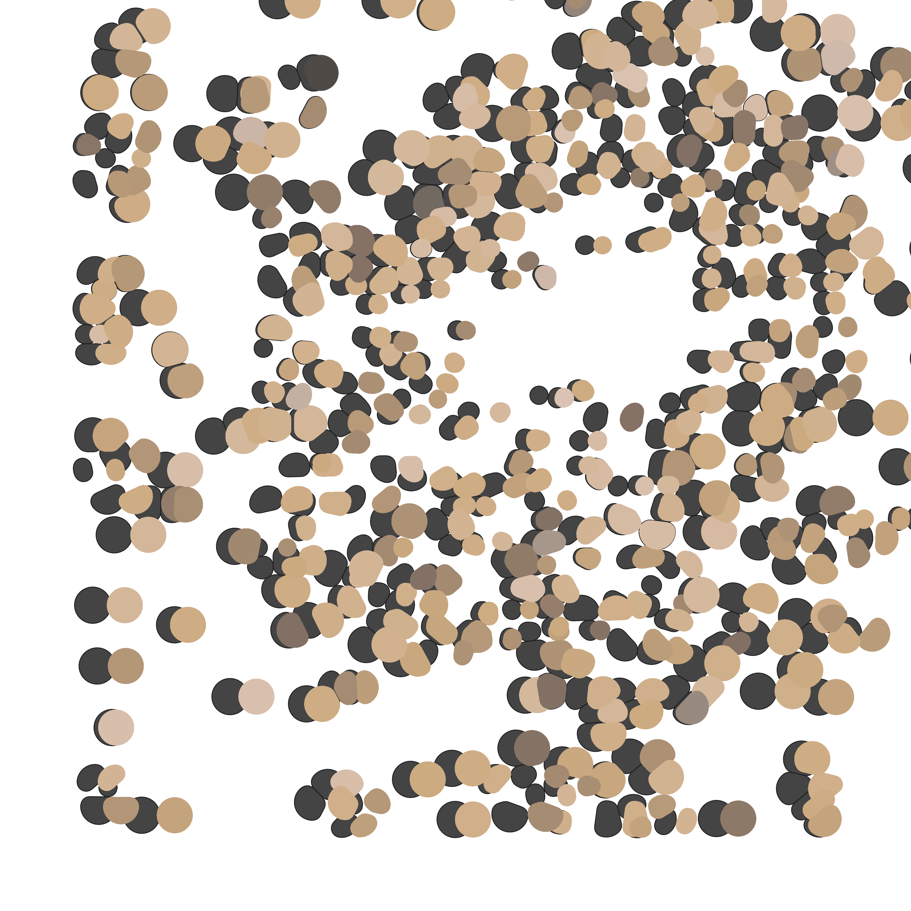
That’s kind of neat. Another approach I’ve been fond of in the past is to use something like this sift() function, which computes a crude approximation to the area of each tile and perturbs only those tiles smaller than a certain size:
sift <- function(data) {
data <- data |>
group_by(group) |>
mutate(
tilesize = (max(x) - min(x)) * (max(y) - min(y)),
x = if_else(tilesize > .02, x, x + rnorm(1)/10),
y = if_else(tilesize > .02, y, y + rnorm(1)/10)
) |>
ungroup()
return(data)
}voronoi_baroque <- function(
seed,
perturb,
max.radius = NULL,
radius = 0,
expand = 0,
...
) {
set.seed(seed)
blank <- ggplot(mapping = aes(x, y, fill = val)) +
theme_void() +
coord_equal(xlim = c(-2.75, 2.75), ylim = c(-2.75, 2.75)) +
guides(fill = guide_none(), alpha = guide_none()) +
scale_fill_gradientn(colours = sample_canva2(seed)) +
scale_alpha_identity() +
scale_x_continuous(expand = c(0, 0)) +
scale_y_continuous(expand = c(0, 0))
blank +
geom_voronoise(
data = unboxy(iterations = 10000, layers = 5),
perturb = perturb,
max.radius = max.radius,
radius = radius,
expand = expand,
...,
show.legend = FALSE
)
}voronoi_baroque(1234, sift)
voronoi_baroque(4000, sift)
voronoi_baroque(2468, sift)
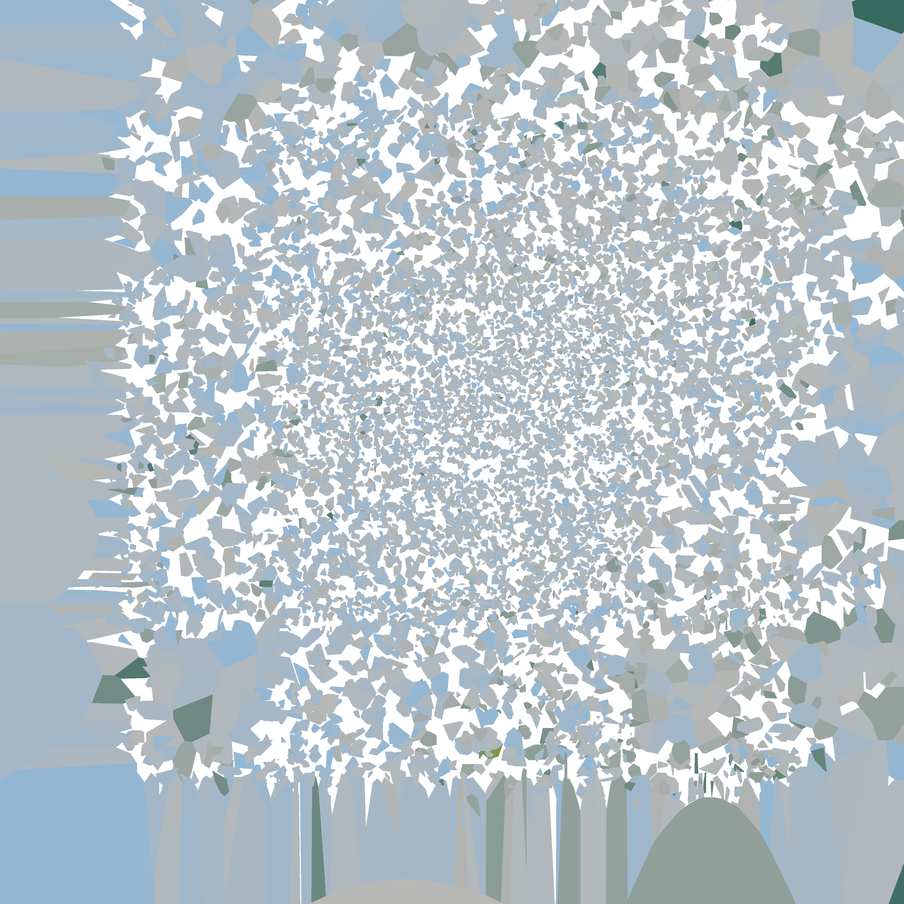
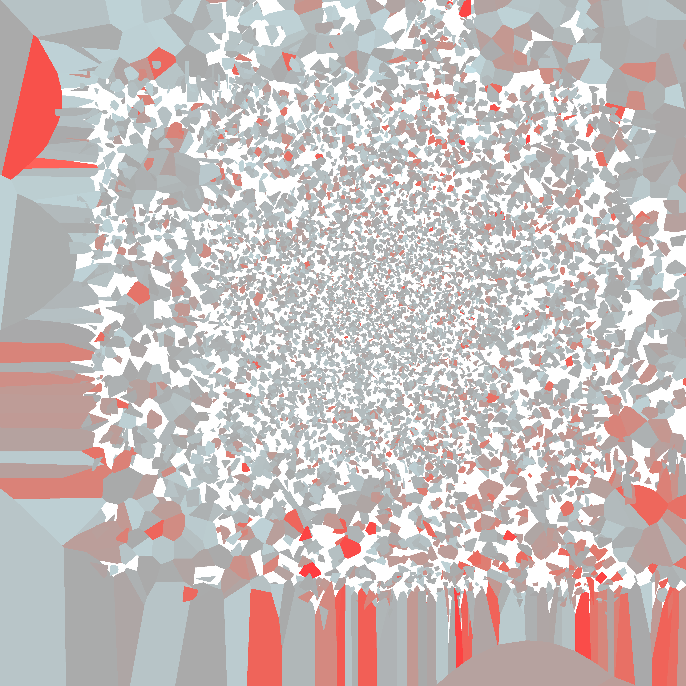
The fun thing about voronoi_baroque() is that you can write whatever perturbation function you like… up to a point, of course. I cannot stress enough that the voronoise package is not particularly reliable!
shake <- function(data) {
data |>
group_by(group) |>
mutate(
x = x + runif(1)/10,
y = y + runif(1)/10
) |>
ungroup()
}voronoi_baroque(21, shake)
voronoi_baroque(43, shake)
voronoi_baroque(17, shake)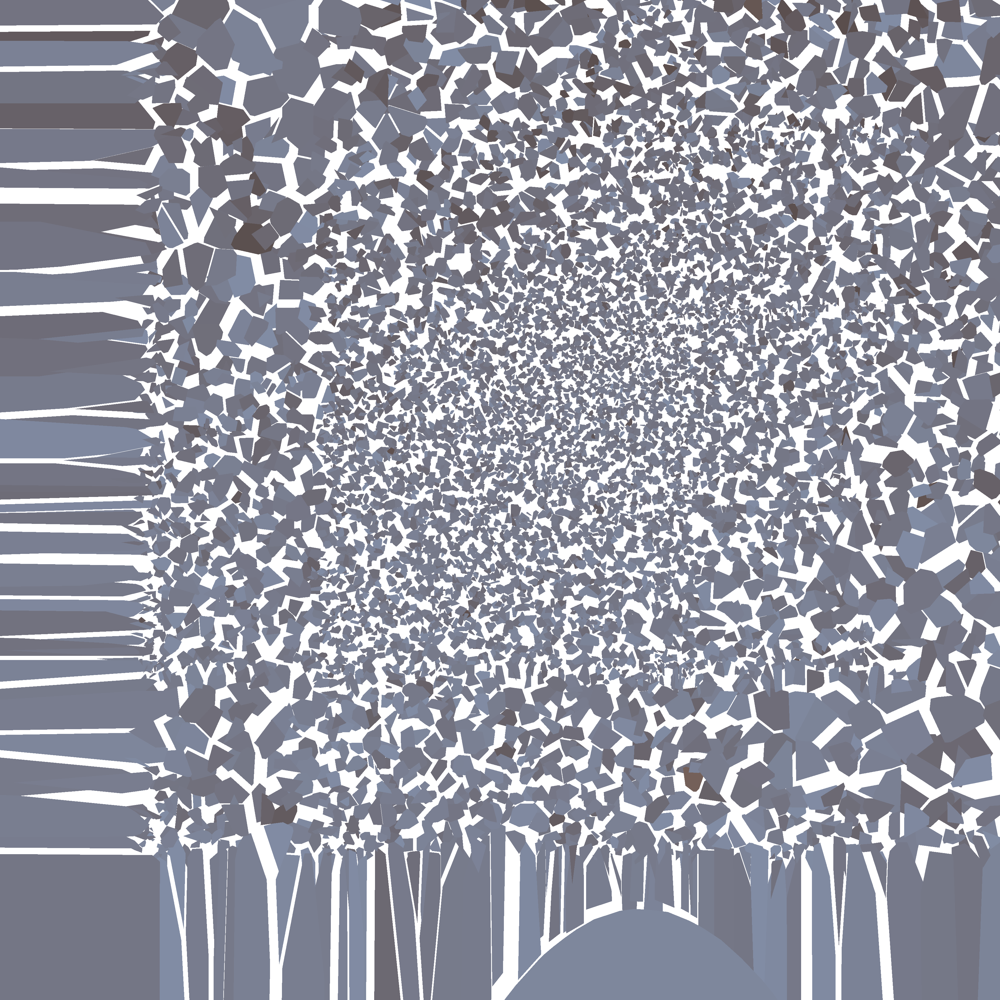
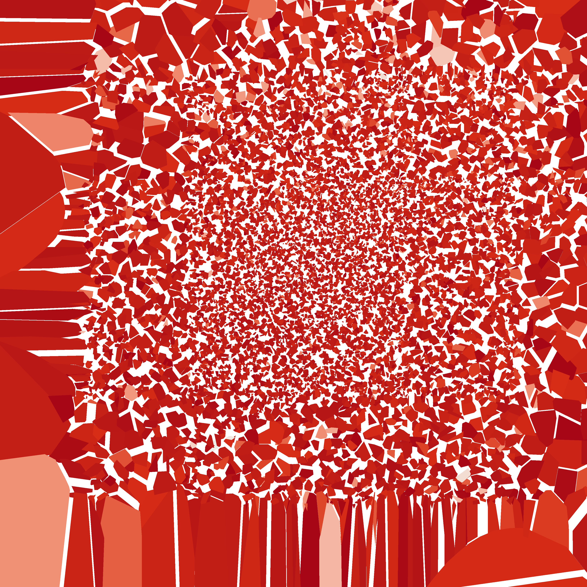
Truchet tiles
One final topic to mention before I wrap this one up: truchet tiles. Truchet tiles are square tiles decorated with asymmetric patterns, designed so that whenever you lay them out randomly, the patterns will connect up in aesthetically pleasing ways. To be honest, I’ve not explore them much myself but Antonio Páez has written the truchet package that you can use to play with these. It’s not currently on CRAN, but you can install from GitHub with:
remotes::install_github("paezha/truchet")The basic idea in the truchet package is to represent the patterns compactly as a geometry column. If you’re familiar with the sf package this sort of output will be familiar to you:
set.seed(123)
mosaic <- st_truchet_ms(
tiles = c("dr", "tn", "ane"),
p1 = 0.2, # scale 1
p2 = 0.6, # scale 2
p3 = 0.2, # scale 3
xlim = c(1, 6),
ylim = c(1, 6)
)
mosaicSimple feature collection with 797 features and 1 field
Geometry type: GEOMETRY
Dimension: XY
Bounding box: xmin: 0.1666667 ymin: 0.1666667 xmax: 6.833333 ymax: 6.833333
CRS: NA
First 10 features:
color geometry
1 1 MULTIPOLYGON (((0.8292294 5...
2 2 POLYGON ((0.4956387 6.16655...
3 2 POLYGON ((0.8340757 5.53053...
4 1 MULTIPOLYGON (((2.829229 2....
5 2 POLYGON ((2.495639 3.166552...
6 2 POLYGON ((2.834076 2.530531...
7 1 MULTIPOLYGON (((1.829229 2....
8 2 MULTIPOLYGON (((2.164615 2....
9 1 POLYGON ((2.5 1.166667, 2.4...
10 2 POLYGON ((2.833333 0.5, 2.8...If you’re not familiar, the key things to note are that the geometry column stores the pattern as a polygon (or collection of polygons), and that geom_sf() understands this geometry column. So you can use code like this to plot your truchet tiling:
mosaic |>
ggplot(aes(fill = color)) +
geom_sf(color = NA, show.legend = FALSE) +
scale_fill_gradientn(colours = c("#222222", "#ffffff")) +
theme_void()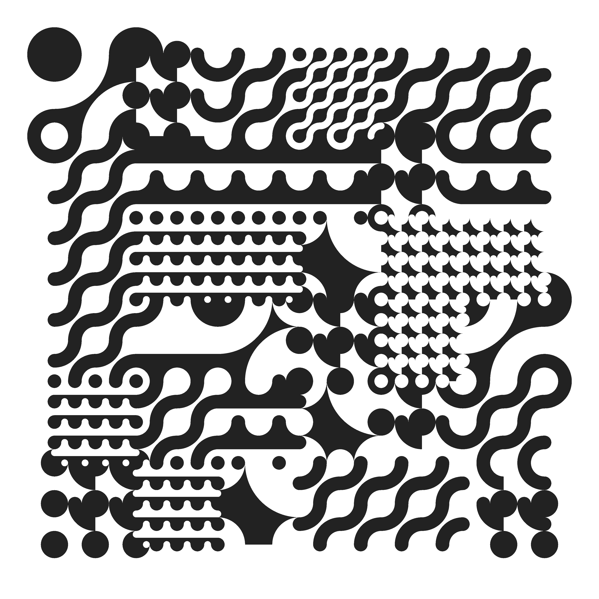
In this example you’ll notice that I don’t actually specify a mapping for geometry. That’s a little unusual for ggplot2, but it is standard to name the column containing a “simple features geometry” as geometry, so geom_sf() will look for a column by that name.
That’s about all I wanted to mention about the truchet package. It makes pretty things and you can check out the package website for more information :)
set.seed(123)
st_truchet_ss(
tiles = c(
"silk_1", "silk_2",
"rainbow_1", "rainbow_2",
"cloud_1", "cloud_2"
),
xlim = c(1, 9),
ylim = c(1, 6)
) |>
ggplot() +
geom_sf(colour = "#222222") +
scale_x_continuous(expand = c(0, 0)) +
scale_y_continuous(expand = c(0, 0)) +
theme_void()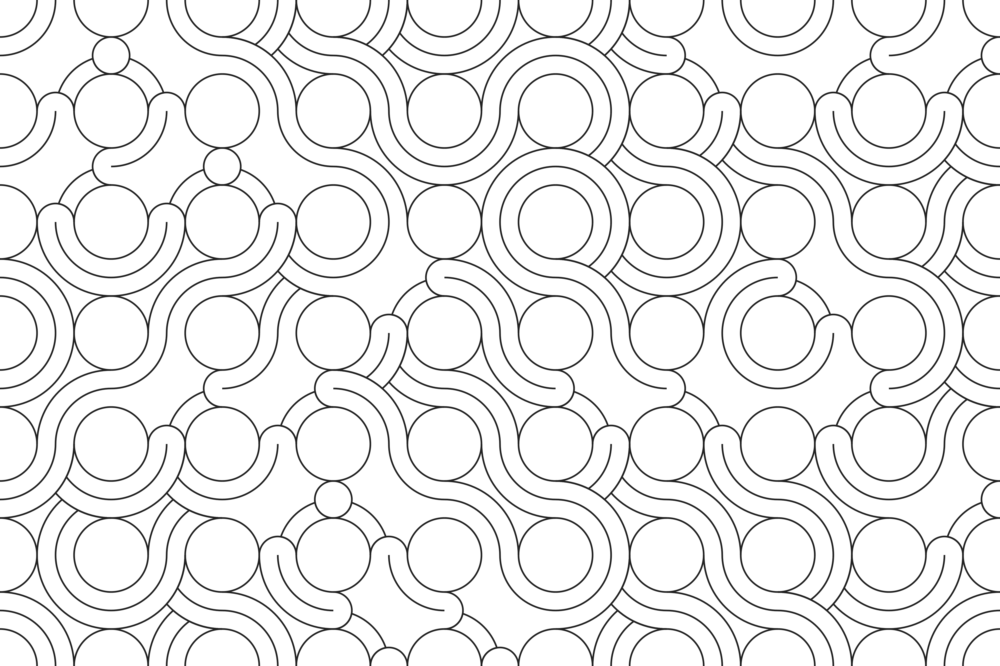
Materials
Code for each of the source files referred to in this section of the workshop is included here. Click on the callout box below to see the code for the file you want to look at. Please keep in mind that (unlike the code in the main text) I haven’t modified these scripts since the original workshop, so you might need to play around with them to get them to work!
Reuse
Citation
BibTeX citation:
@online{navarro2024,
author = {Navarro, Danielle},
title = {Art from Code {VI:} {Tiles} and Tessellations},
date = {2024-12-23},
url = {https://blog.djnavarro.net/posts/2024-12-23_art-from-code-6/},
langid = {en}
}
For attribution, please cite this work as: